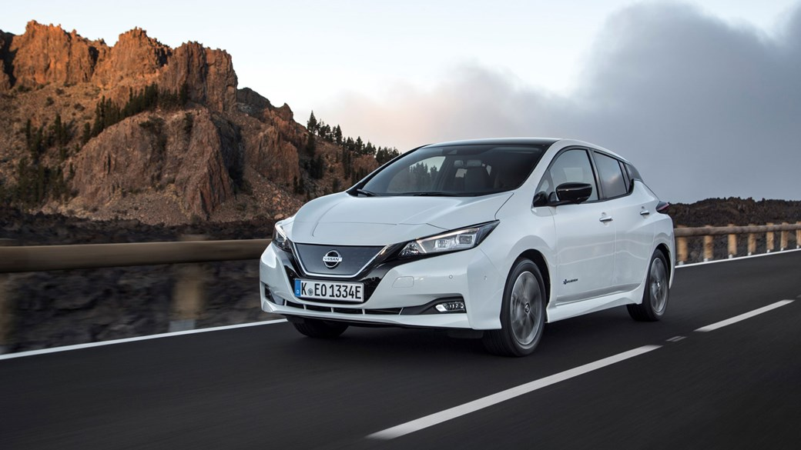

Nissan Leaf (укр. Ніссан Ліф, також відома як «LEAF», «ЛІФ»[1]) — марка автомобіля, що випускається в Японії з 2010 року. Це перший сучасний електромобіль масового виробництва і найбільш продавана модель електромобіля у світі (стан: грудень 2015) і найпродаваніший електромобіль в Україні станом на вересень 2017 року.
Електрична історія Ніссана почалася ще в кінці 1940-х, коли в компанії Tokyo Electro Automobile створили два електромобіля Tama і Tama Senior на свинцевих батареях. У 1951 році фірма об'єдналася з компанією Prince Motor, яка, в свою чергу, в 1966 році стала частиною Ніссана. У 1970-х, 80-х і 90-х роках було безліч концептів, а першим дрібносерійним Ніссаном на батарейках стала Altra EV, яку показали в 1997 році на автосалоні в Лос-Анджелесі. Через пару років з'явився мікроелектрокар Hypermini, але технології масового електромобіля Nissan почав відпрацьовувати набагато пізніше. У другій половині 2000-х в тестах брали участь прототипи на основі моделей Cube і Tiida. Модифіковану платформу Тііди і отримав серійний Leaf, представлений в кінці 2010-го.Продажі почалися в Японії і США у грудні 2010 року, у деяких країнах Європи на початку 2011 року. Станом на листопад 2010, автомобіль виробляється на заводі Оппама, Японія. Потужність японського заводу становила на початку виробництва 50 тисяч одиниць на рік. Виробництво розширилося на заводи в Смирні, штат Теннесі США, у початку 2012, і в Сандерленді, Велика Британія у 2013 році. Потужність тих заводів становить 150 і 50 тисяч, відповідно. Nissan Leaf — перший електромобіль, який було номіновано на звання «автомобіль року».
Одна зарядка акумуляторів дає максимальний пробіг до 160 кілометрів. Повна зарядка акумуляторів займає 8 годин зі звичайною напругою в мережі. Режим швидкої зарядки дозволяє поповнити акумулятори приблизно за 30 хвилин. Електродвигун розвиває потужність 107 кінських сил і тяговий момент 280 ньютонів на метр. Nissan Leaf розганяється до 100 км/год за 10,8 секунд (до 60 км/год приблизно за 5 секунд).
Маса батареї близько 600 фунтів (300 кг) і розташована вона у днищі автомобіля, під передніми та задніми сидіннями. Ємності батареї 24 кВт•год із можливістю рекуперативного гальмування вистачає (за оцінками представників Nissan) на 160 км пробігу. Життєвого циклу батареї, за попередніми оцінками, має вистачити мінімум на 5 років.
Повний цикл заряду акумуляторів від електромережі з напругою 230 Вольт та електророзеткою на 16 Ампер займає від 6 до 8 годин, 80 % ємності на спеціальному зарядному пристрої Nissan (480 вольт — 125 ампер) за 30 хвилин. Автомобіль обладнаний двома гніздами для зарядних пристроїв в передній частині машини: одне для стандартної, інше — для пришвидшеної підзарядки. Для пришвидшеної зарядки передбачене використання зарядної станції, яка має з'єднувач CHAdeMO (Тип 4 за IEC 62196 ).
Із початку виробництва електромобіля на англійському заводі Nissan в Сандерленді (паралельно із кросовером Quashqai), а також, будівництва розташованого тут же заводу із випуску акумуляторів модель 2013 року отримала більше 100 вдосконалень, і серед найважливіших — потужний і ефективний акумулятор, котрий дозволив довести пробіг до 123 миль (199 км) проти 109 миль (175 км) у моделі 2012 року. Крім того, вдвічі (до 4 годин) зменшено час підзарядки від спільного 6,6-кіловатного підзарядного пристрою. В перспективі на Leaf з'являться парковочна камера Around View кругового обзору, шкіряна оббивка салону та ін.
Тести показують, енергоспоживання Leaf: 765 кДж/км (21 кВт•год/100 км), що еквівалентно витраті близько 99 MPG (2,4 л / 100 км). У 2016 році на модифікаціях SL і SV встановлюється нова 30-кВт батарея, яка збільшує дальність поїздки до можливих 172,2 км. Модифікація S дешевша і оснащена менш потужною батареєю з запасом ходу до 135,19 км, але цю модель також доповнено 5-дюймовим кольоровим цифровим екраном і аудіосистемою «NissanConnect» з підтримкою мобільних додатків. У модифікаціях SV і SL система «NissanConnect» входить в базову комплектацію.
За даними компанії Nissan на початок 2013 року світовий парк електромобілів Leaf становив понад 55000 од., а їх сумарний пробіг склав 288 млн км (для транспортних засобів, зареєстрованих в CARWINGS). Найбільший національний парк Leaf перебуває в експлуатації в Норвегії (понад 3400 автомашин). За підсумками 1 кварталу 2013 року припускають, що Leaf займе в національному хіт-параді продаж легкових автомобілів 5-е місце. Електромобіль Leaf показав найвищий рейтинг задоволеності клієнтів серед всіх моделей Nissan на європейському ринку, рівний 93 %. Згідно з опитуваннями 92% власників Leaf використовують їх майже щодня, 55% власників їздять на них на роботу, 54% водіїв здійснюють в день пробіги понад 60 км.[11] Кількість дилерів, що торгують електромобілем Leaf, підскочила за рік із 150 до більш ніж 1400. Nissan за рахунок власних коштів встановив по Європі тільки в 2012 році понад 400 громадських зарядних станцій. Загальна кількість таких станцій в Європі збільшилась за 2012 рік з 12000 до 20000, крім того, кількість станцій швидкої підзарядки зросла за 2012 рік із 195 до 600 од.
Хетчбек Nissan Leaf став першою моделлю, яку експерти EuroNCAP випробували в 2018 році. Відтепер тести проходять по розширеним протоколам. Додатково оцінюються: розпізнавання велосипедистів при автоматичному гальмуванні, виявлення пішоходів в темряві і ефективність систем стеження за розміткою. Відрадно, що жорсткість правил не завадило електрокару повторити свій успіх 2011 року та заробити максимальні п'ять зірок.